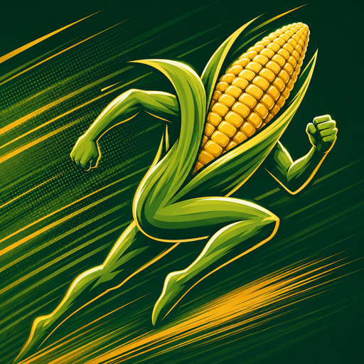

A real-world, soil-first companion for corn farmers — the practical sibling of the Corn 3000 game. Map your fields, learn what your ground is actually made of, and watch it get better year after year. Everything runs on your phone: no account, no login, no analytics. Your farm data never leaves the device.

MaizeRunner walks a brand-new user through the whole arc — mapping, sampling, the growing season, and the long game of building fertility — in the order the work actually happens. Nothing here needs a signal in the field.
Draw or walk field boundaries on satellite imagery.
Soil type auto-read from USDA and ISRIC data by location.
A step-by-step guide to taking a proper soil sample.
Enter lab results; a measurement always beats an estimate.
Log planting; follow growing-degree days to the current stage.
A caveated yield range — never a single false promise.
Ten years of organic matter, pH and soil life, modeled.
Every operation recorded, so the trend line is real.
Grounded in USDA, NRCS and land-grant university research · honest numbers, plainly explained
Soil is the spine. Every feature exists to help a working farmer understand their ground, track a real season against it, and make it better over time.
Draw a boundary by hand or walk it with the phone in your pocket. Split a field into management zones and track each part of it on its own.
Auto-detect soil type by location — USDA SSURGO in the US, ISRIC
SoilGrids worldwide. Every survey value carries an estimated badge; it
is never dressed up as a lab result.
A plain, step-by-step guide to pulling a proper soil sample, and a place to record the lab results when they come back. The app's job is to make a real test legible, not replace it.
Log planting and follow the real season — weather to growing-degree days to the current corn growth stage — so you always know where the crop stands.
A caveated low–high band with the factors helping and hurting, and its state-level caveat in plain sight. Withheld mid-season when the weather-to-date would only mislead.
Project organic matter, pH and soil life a decade out under cover crops, reduced tillage, manure and rotation. Record every operation and watch the trend the numbers actually make.
These are architectural, not preferences. They are what keep the numbers honest and the farm data yours.
A greenfield SwiftUI app for iOS 17, on-device from the ground up. GRDB/SQLite for storage; public soil and weather sources sit behind protocols so a new backend slots in without touching the app.
Questions, trouble, a soil number that looks wrong, or a purchase that did not land: write to us and you will get a reply from a human, usually within two business days. MaizeRunner has no account system, so there is nothing to verify and nothing to reset: just describe what you saw.
When something is broken, the fastest fix comes from telling us your iOS version, your iPhone model, and what you tapped just before it went wrong. Screenshots help. No farm data is ever attached to a support mail unless you choose to send it.